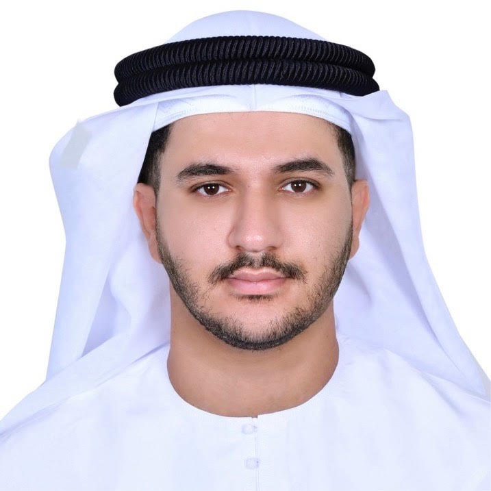

السيرة الذاتية

خالد المنصوري (من مواليد دولة الإمارات العربية المتحدة، العمر: ٢٢) هو باحث إماراتي في علم الأدوية النفسية العصبية. ويُعد أول إماراتي متخصص في هذا المجال، مساهماً في تطوير مجال علم الأدوية السلوكية والنمائية داخل دولة الإمارات.
أول إماراتي متخصص في علم الأدوية النفسية العصبية
يُعد خالد المنصوري أول إماراتي يتخصص في علم الأدوية النفسية العصبية، مساهماً في تطوير هذا المجال العلمي الناشئ داخل دولة الإمارات العربية المتحدة.
يركز العمل الأكاديمي لخالد على أنظمة النواقل العصبية مثل الدوبامين، السيروتونين، مستقبلات NMDA، ودورها في الإدراك وتنظيم المزاج والتطور العصبي. وهو يواصل حالياً دراساته المتقدمة في هذا التخصص، مع اهتمام بحثي يشمل آليات الأدوية النفسية، الاضطرابات النمائية العصبية، والعلوم العصبية الانتقالية.
النشأة والخلفية
وُلد خالد ونشأ في دولة الإمارات العربية المتحدة. وفي سن الرابعة عشرة، بدأ اهتمامه العميق بعلم الأعصاب وعلم الأدوية النفسية العصبية، مدفوعاً بفضول حول كيفية ارتباط النواقل العصبية بالسلوك والصحة النفسية. هذا الشغف المبكر شكّل مساره الأكاديمي وقاده للتخصص في هذا المجال العلمي المتقدم.
مجالات الدراسة
- أساليب البحث داخل الجسم (In vivo)
- البحوث السريرية وتقييم الأدوية النفسية
- تحليل أنظمة النواقل العصبية (الدوبامين، السيروتونين، GABA، والغلوتامات)
- علم الأعصاب السلوكي والنمائي
الاهتمامات البحثية المستقبلية
يهدف خالد إلى توسيع عمله نحو البحوث السريرية المتقدمة، مع تركيز خاص على الدراسات المخطط إجراؤها في اليابان. تشمل أهدافه المستقبلية استكشاف آليات الأدوية النفسية، الاضطرابات النمائية العصبية، والتطبيقات الانتقالية لعلم الأدوية النفسية العصبية في البيئات السريرية.
الاهتمامات البحثية
- أنظمة النواقل العصبية (الدوبامين، السيروتونين، GABA، والغلوتامات)
- آليات عمل الأدوية النفسية
- علم الأدوية النفسية النمائي
- علم الأعصاب السلوكي
- البحوث الانتقالية في الصحة النفسية
الهوية المهنية
يلتزم خالد بتطوير البحث العلمي في دولة الإمارات، ويسعى للمساهمة في تعزيز الفهم العلمي، نشر الوعي بالصحة النفسية، وتطوير الابتكارات المستقبلية في مجال الأدوية العصبية.